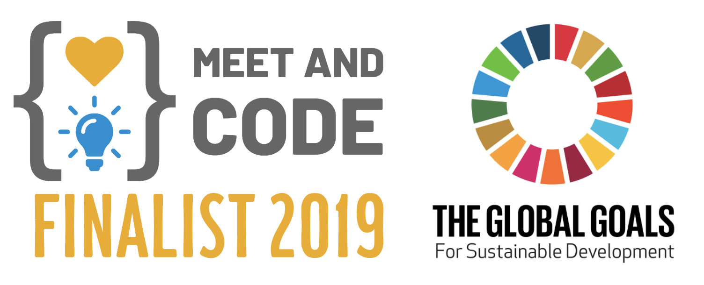
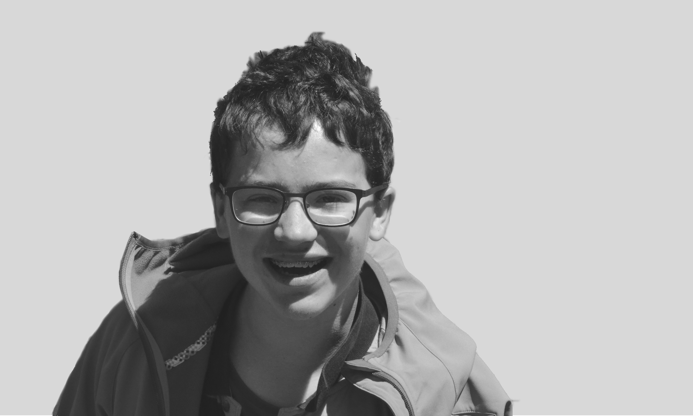
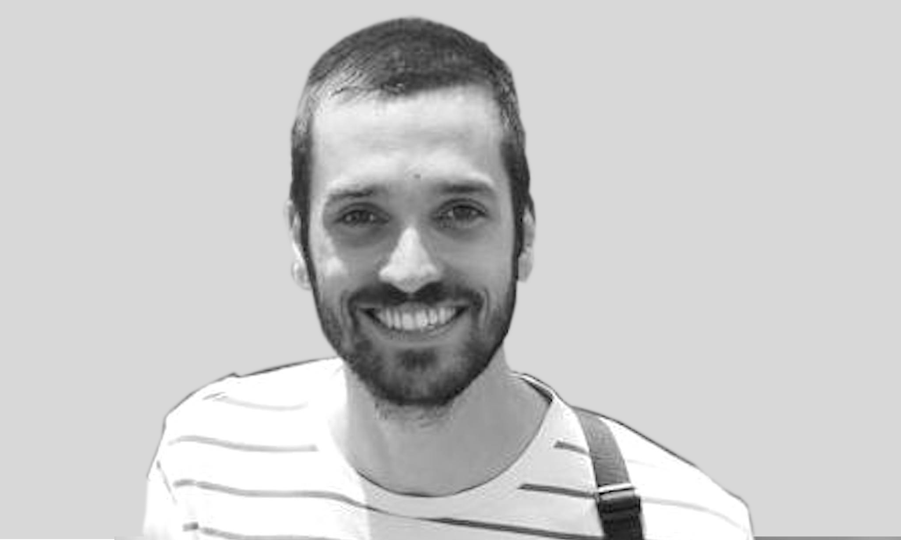
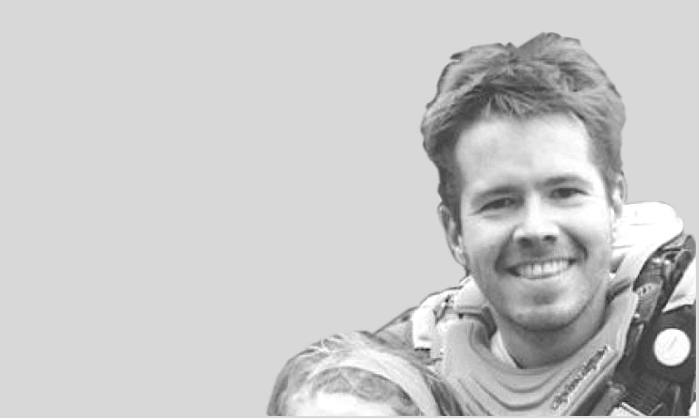

Upcoming Workshops & Events

Here is our program of coding, robotics & electronics workshops for the 2020 Winter Session:

About
Techies Lab is an initiative launched in 2015 in Belgium, by a happy bunch of passionate coaches, for kids and teenagers to discover, experiment, learn and play with technology (robots, coding, gaming, 3D printing...). Through weekly workshops and tech camps, we foster our Techies' creativity!
Our objective is to instill the maker's spirit, deconstruct to better reconstruct and understand the inner working of things. Our workshops are fun (we laugh!), hands-on (we make things) and long-lived (we take back our projects home to further develop them).


 

Our team









Contact
Contact us to ask us questions, leave us comments and share your love!
© Techies Lab ASBL 2020 - Designed and built in Belgium with